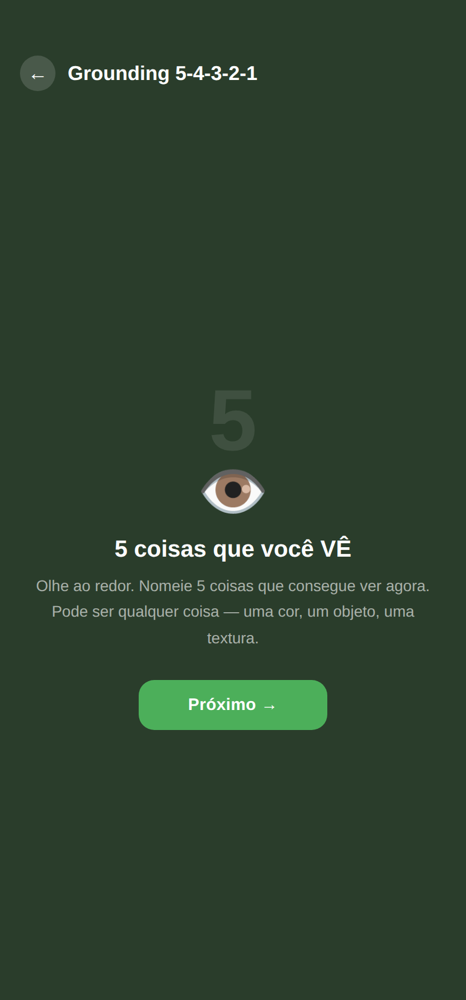

Acompanhamento pessoal na lógica da redução de danos. Um passeio por todas as telas, com dicas. 🌿
Bem-vindo(a) 💚
Este guia mostra todas as funcionalidades do app, com prints de cada tela e dicas práticas. Não precisa decorar nada — o dichava.app foi feito pra ser explorado no seu tempo. Use isto como mapa quando bater dúvida.
Na primeira vez, o mascote Dichavaldo faz algumas perguntas pra entender seu momento e montar seu perfil. A primeira é o seu objetivo:
Acompanhar — entender padrões, sem pressão de mudar.
Reduzir — diminuir no seu ritmo.
Parar / já parei — abstinência com apoio.
Redução de danos — usar com mais segurança.
💡 Dica: não existe resposta certa. Você pode mudar o objetivo quando quiser, em Configurações — e o app se adapta.
2
🏠 Tela Início
Seu painel de cuidado
Dias seguidos e uma frase de incentivo, com seu avatar.
Check-in de humor — registre como está em 1 toque.
Seu dia hoje — pequenas tarefas (check-in, registrar, pausa).
Tempo desde o último uso por substância.
Cards de acesso rápido para todos os recursos.
💡 Dica: use o card "Registrar igual ao último" pra anotar em 1 toque quando o uso for parecido com o anterior.
3
➕ Registrar
Registrar um uso
Toque no +. Você informa a substância (ícones ilustrados), quantidade, período, contexto e emoção.
💡 Dica: capriche no contexto e na emoção — é o que faz o app gerar bons insights depois (onde, com quem, como você se sentia).
⚠️ Cuidado, não cobrança: se passar do seu limite (ex: 3/dia), aparece um aviso gentil. Nunca há bloqueio — a escolha é sempre sua.
Acompanhar & refletir
4
📅 Agenda & Diário
Seu calendário e diário
Calendário colorido por dia, com legenda — toque pra editar.
Diário livre com ditado por voz (microfone).
Pergunta do dia adaptada ao seu objetivo.
Meus registros, com editar e apagar.
💡 Dica: sem tempo de digitar? Toque no microfone e fale — o app transcreve pra você.
5
📊 Progresso
Progresso & conquistas
Minhas metas — se preenchem sozinhas conforme você registra.
Insights do seu padrão (horários, gatilhos, gasto estimado…).
Conquistas — medalhas que você desbloqueia.
Histórico completo de registros.
💡 Dica: os insights melhoram quanto mais você registra. Dê alguns dias — os padrões começam a aparecer.
6
🧑 Meu Perfil & Mestre de Si
Sua jornada em XP
Toque no avatar (canto da tela inicial) pra abrir seu perfil. Cada cuidado vira XP e você sobe de nível (Observador, e por aí vai) — com tela de parabéns e confetes.
Resumo: dias seguidos, registros, reflexões, resistências.
Editar avatar — escolha a cor do Dichavaldo.
Missão do dia e trilha de habilidades completam a jornada.
💡 Dica: as ferramentas de crise são sempre livres — nunca ficam trancadas atrás de XP.
7
🔮 Reflexões
Carta de reflexão
Uma carta no estilo tarô, dourada. Toque ou agite o celular pra virar e receber uma pergunta com um texto que aprofunda a reflexão.
Outra · Responder · Compartilhar (vira imagem pra postar).
Meu humor esta semana em bolhas coloridas.
Resistência ativa e artigos de redução de danos.
💡 Dica: gostou de uma pergunta? Toque em Responder — ela vai direto pro seu diário.
Cuidado na hora difícil
8

🆘 Modo Crise
Tudo à mão na crise
Respiração 4-7-8 — acalma o sistema nervoso.
Surfar a onda — a fissura tem pico e fim.
Grounding 5-4-3-2-1 — volta ao presente pelos sentidos.
Trilha de habilidades que desbloqueia extras com constância.
💡 Dica: as batidas binaurais só funcionam bem de fones de ouvido.
12
🎮 Jogos de foco
Ocupe as mãos e a cabeça
Mini-games leves — como o Flappy Marola, Blocos, Ping-pong e Bolhas — pra atravessar a fissura distraindo. O botão Sair fica sempre acessível.
💡 Dica: a fissura costuma durar poucos minutos. Um joguinho rápido ajuda a "surfar" esse tempo.
Ajustes & privacidade
13
⚙️ Configurações
Sua conta e preferências
Enviar feedback direto pro grupo de testes 💚
Notificações de cuidado (push), com limites de alerta.
Modo escuro e Modo discreto (vira "Diário").
PIN de bloqueio, objetivo & metas.
Backup, restaurar e exportar dados.
💡 Dica: o Modo discreto faz o app parecer um diário comum — bom pra privacidade no dia a dia.
🔔 Notificações de cuidado
Em Configurações → Notificações de cuidado, você ativa avisos que chegam mesmo com o app fechado — mensagens de acolhimento conforme a substância, os dias desde o último uso e seu objetivo. No máximo 1 por dia, sem spam.
📱 iPhone: instale o app na Tela de Início e aceite a permissão — só assim o push funciona (limitação da Apple).
🛡️ Privacidade
Seu histórico fica no seu aparelho e é sincronizado com o servidor próprio do projeto (para backup entre aparelhos e as notificações). Nada é compartilhado com terceiros, e você pode exportar ou apagar quando quiser. Há ainda PIN e Modo discreto para mais privacidade.
Dicas pra aproveitar melhor
🍃 Registre sem culpa
Registrar um uso não é "fracassar". É informação que te ajuda a se conhecer. Honestidade vale mais que números bonitos.
⏱️ Pouco e constante
Melhor 30 segundos por dia do que tentar lembrar tudo no fim da semana. O check-in de humor é o jeito mais rápido.
🌙 Use o Modo Crise antes da crise
Conheça a respiração e o grounding num momento calmo. Assim, na hora difícil, já são familiares.
📲 Instale na tela inicial
Além de abrir mais rápido, é o que libera as notificações de cuidado — principalmente no iPhone.
💾 Faça um backup
Em Configurações → Backup completo. Guarde o arquivo: assim seu histórico nunca se perde se trocar de aparelho.
🎯 Revise seu objetivo
Mudou de fase? Troque o objetivo. O app, as perguntas e as dicas se adaptam ao novo momento.
🔮 Carta no fim do dia
Vire uma carta de reflexão à noite e responda no diário. Vira um ritual gentil de fechamento.
💬 Mande feedback
Achou um bug ou teve uma ideia? Configurações → Enviar feedback. Sua experiência deixa o app melhor pra todo mundo.
Lembrete sempre válido: o dichava.app é um recurso de apoio e não substitui acompanhamento profissional. Em emergências, ligue SAMU 192. Apoio emocional 24h: CVV 188.